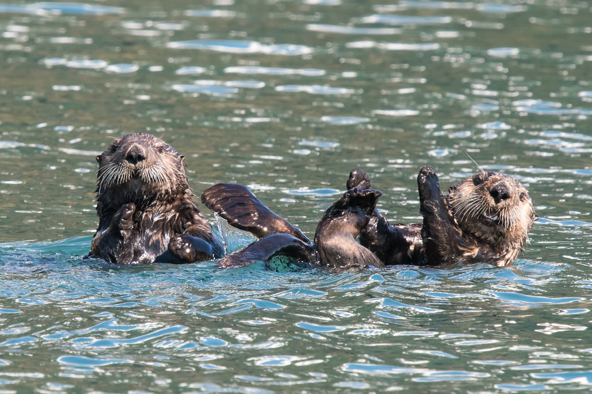
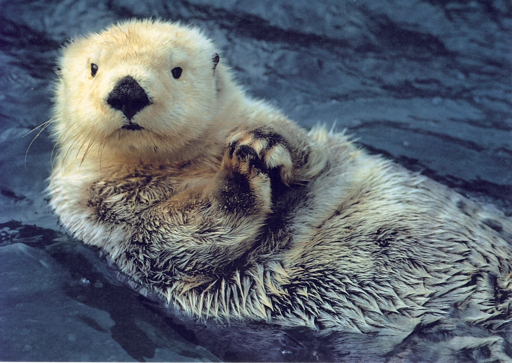
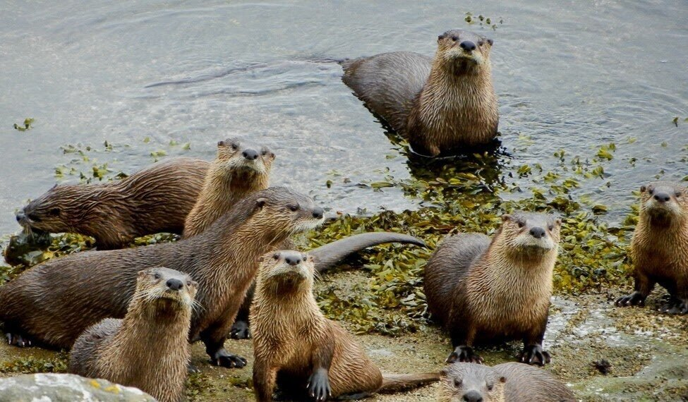
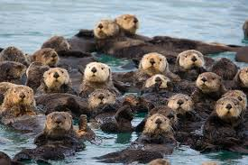

Otters are pretty cool when you study them a little more, lets take a look!
Playful Nature

- Social Animals:
Otters are known for their playful behavior, often seen sliding down mudbanks, wrestling with each other, and playing with objects like rocks and shells. - Intelligence:
Their play is not just for fun; it also helps them develop skills they need to survive. They are among the most intelligent animals, capable of using tools like rocks to break open shellfish.
- Social Animals:
Unique Physical Adaptations

- Streamlined Bodies:
Otters have sleek, streamlined bodies that allow them to swim efficiently. They can swim up to 7 mph and are excellent divers, capable of holding their breath for several minutes underwater. - Dense Fur:
They have some of the densest fur in the animal kingdom, with up to a million hairs per square inch. This dense fur keeps them warm in cold water.
- Streamlined Bodies:
Ecological Importance

- Keystone Species:
Otters play a critical role in their ecosystems. For example, sea otters help maintain kelp forest ecosystems by preying on sea urchins, which can otherwise overgraze kelp. Biodiversity Indicators: Healthy otter populations often indicate a healthy ecosystem. Their presence can signify clean water and a balanced aquatic environment.
- Keystone Species:
Family-Oriented

- Strong Family Bonds:
Otters are highly social and often live in family groups. They exhibit strong maternal care, with mothers teaching their pups essential survival skills. - Communication:
They have a range of vocalizations and body language to communicate with each other, including whistles, growls, and even purrs.
- Strong Family Bonds:
Conservation Stories

- Conservation Success:
Some otter species, like the sea otter, have been brought back from the brink of extinction through concerted conservation efforts. Their recovery is a testament to successful wildlife management and environmental awareness.
- Conservation Success:
Miscellaneous Fascinating Facts

- Tool Use:
Sea otters are one of the few non-primate species known to use tools. They use rocks to crack open hard-shelled prey, a behavior that showcases their problem-solving skills. - Floating Habits:
Sea otters are often seen floating on their backs, sometimes holding hands in "rafts" to stay together, which helps them avoid drifting away from their groups. Otters' combination of playful behavior, impressive adaptations, and crucial ecological roles make them truly fascinating and "cool" animals.
- Tool Use:
Here is a YouTube video sharing a little more about otters: